Struktura a vlastnosti plynných látek
Ideální (dokonalý) plyn = model (jednodušší než reálné plyny), u kterého:
- rozměry molekul jsou zanedbatelné vzhledem k jejich středním vzdálenostem
- vzájemné působení molekul se považuje za neexistující (kromě srážek, které jsou velmi krátké) — tedy $E_p = 0$, $U = E_k$
- srážky jsou dokonale pružné
Poznámka: většina reálných plynů se chová jako ideální plyn za normálních podmínek (0 °C, 1 atm).

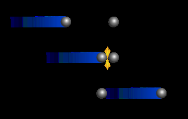
Maxwellovo rozdělení molekul podle rychlosti
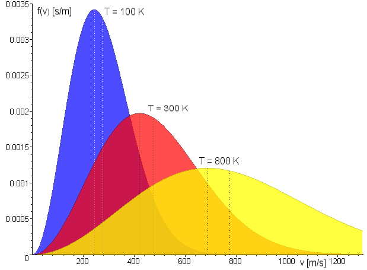
$v_p$ – nejpravděpodobnější rychlost | $v_k$ – střední kvadratická rychlost
S rostoucí teplotou se rozdělení posouvá k vyšším rychlostem a zplošťuje se.
Střední kvadratická rychlost $v_k$
Kdyby všechny molekuly měly rychlost $v_k$, jejich celková energie by se nezměnila.
$E_0 = \dfrac{1}{2}m_0v_k^2 = \dfrac{3}{2}kT$
$T$ – termodynamická teplota plynu
$k$ – Boltzmannova konstanta
$k = 1{,}38 \cdot 10^{-23}\ \text{J/K}$
$v_k = \sqrt{\dfrac{3kT}{m_0}}$
Úloha z prezentace:
Najděte střední kvadratickou rychlost kyslíku O₂ při teplotě: a) −100 °C, b) 0 °C, c) 100 °C.
Řešení: $v_k \approx$ 367 m/s (a), 461 m/s (b), 539 m/s (c) — viz příručka pro postup výpočtu.
Tlak ideálního plynu
Fluktuace tlaku v čase (při stálé teplotě) — tlak kolísá kolem ustálené hodnoty v důsledku nárazů jednotlivých molekul na stěnu nádoby.
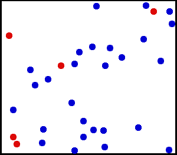
Rovnice tlaku ideálního plynu
$p = \dfrac{1}{3}\dfrac{N}{V}m_0v_k^2$
$N$ – počet molekul plynu | $V$ – objem plynu | $m_0$ – hmotnost jedné molekuly | $v_k$ – střední kvadratická rychlost
Stavová rovnice ideálního plynu
Stavové veličiny – veličiny popisující stav plynu: $p$ (tlak), $V$ (objem), $T$ (termodynamická teplota), $N$ (počet molekul), $m$ (hmotnost), $n$ (látkové množství), $M_m$ (molární hmotnost), ...
Stavová rovnice – vztah mezi stavovými veličinami. Možné tvary:
$pV = NkT$
$pV = nR_mT$
$pV = \dfrac{m}{M_m}R_mT$
$\dfrac{p_1V_1}{T_1} = \dfrac{p_2V_2}{T_2} = \dfrac{pV}{T} = \text{konst.}$
$R_m = 8{,}31\ \text{J}\cdot\text{K}^{-1}\text{mol}^{-1}$ — molární plynová konstanta
Molární hmotnost a Avogadrova konstanta
Molární hmotnost látky = hmotnost jednoho molu látky.
Mol je látkové množství soustavy, která obsahuje právě $6{,}02214076 \cdot 10^{23}$ elementárních entit (atomů, molekul, iontů...) — od roku 2019 je toto číslo pevně stanovenou hodnotou Avogadrovy konstanty a definuje mol přímo (dříve byl mol vázán na počet atomů ve 12 gramech uhlíku $^{12}$C, čemuž přibližně odpovídá i dnes). Značka: mol.
Avogadrova konstanta $N_A$ udává počet elementárních entit v jednom molu látky.
$N_A = 6{,}022 \cdot 10^{23}\ \text{mol}^{-1}$
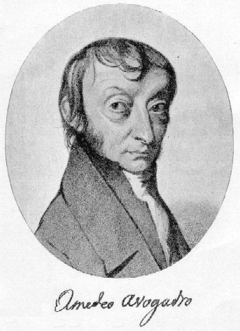
1776–1856
Stavové změny ideálního plynu
Ze stavové rovnice $\dfrac{p_1V_1}{T_1}=\dfrac{p_2V_2}{T_2}$ odvodíme čtyři speciální děje podle toho, která veličina zůstává konstantní.
Izotermický děj
Je-li $T_1=T_2$, stavová rovnice dává:
$p_1V_1 = p_2V_2$ (Boyleův–Mariottův zákon)
Izoterma je křivka vztahu $p = \text{konst.}/V$ — má tvar hyperboly. Její poloha v diagramu p-V závisí na teplotě.
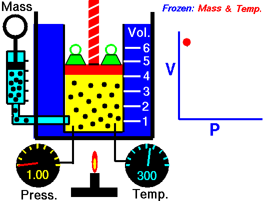
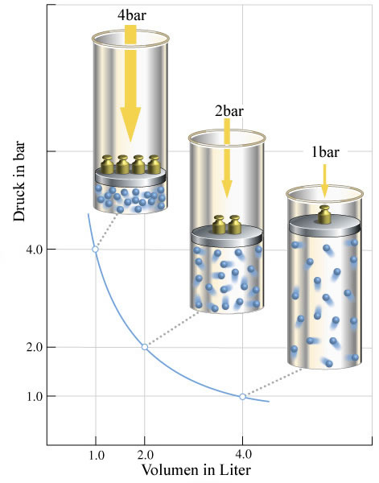
1. termodynamický zákon: $Q = \Delta U + W'$
Protože $T=\text{konst.} \Rightarrow E_0=\text{konst.} \Rightarrow \Delta U = 0 \Rightarrow Q = W'$
Během izotermického děje se teplo přijaté plynem rovná práci vykonané plynem. Přijímá-li plyn teplo, rozpíná se, aby si udržel stálou teplotu; při izotermické kompresi musí být plyn chlazen.
Izochorický děj
Je-li $V_1=V_2$:
$\dfrac{p_1}{T_1} = \dfrac{p_2}{T_2}$ (Charlesův zákon)
Izochora je svislá úsečka v diagramu p-V; její poloha závisí na objemu.
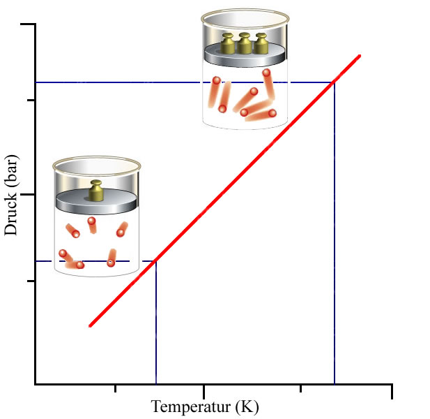
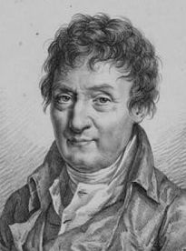
1746–1823
Charles byl první, kdo vzlétl s balónem naplněným vodíkem.
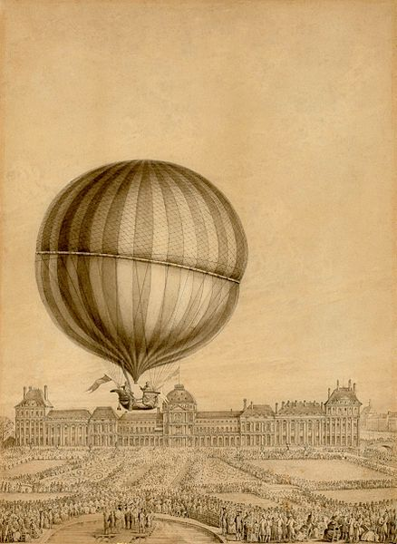
1. termodynamický zákon: $V=\text{konst.} \Rightarrow W'=0 \Rightarrow Q = \Delta U$, pro $\Delta T=T_2-T_1$ platí $Q = c_V \cdot m \cdot \Delta T$
Během izochorického děje se teplo přijaté plynem rovná změně jeho vnitřní energie. Přijímá-li plyn teplo, jeho teplota roste. $c_V$ je měrná tepelná kapacita plynu při stálém objemu.
Izobarický děj
Je-li $p_1=p_2$:
$\dfrac{V_1}{T_1} = \dfrac{V_2}{T_2}$ (Gay-Lussacův zákon)
Izobara je vodorovná úsečka v diagramu p-V; její poloha závisí na tlaku.
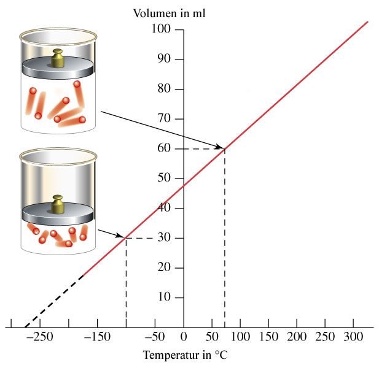
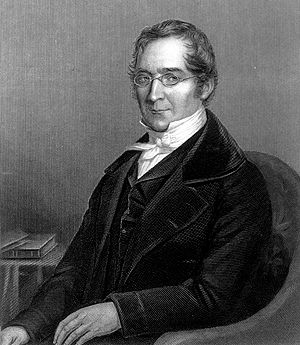
1778–1850
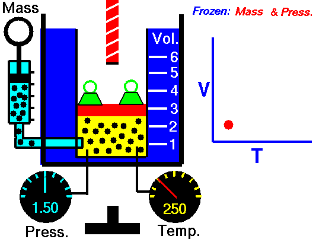
1. termodynamický zákon: $Q = \Delta U + W'$, pro $\Delta T=T_2-T_1$ platí $Q = c_p \cdot m \cdot \Delta T$
Přijímá-li plyn teplo, jeho teplota roste a plyn zároveň koná práci. $c_p$ je měrná tepelná kapacita při stálém tlaku, přičemž vždy platí $c_p > c_V$.
Adiabatický děj
$p_1V_1^\kappa = p_2V_2^\kappa$ (Poissonův zákon)
Adiabata je křivka vztahu $pV^\kappa=\text{konst.}$ — má strmější průběh než izoterma.
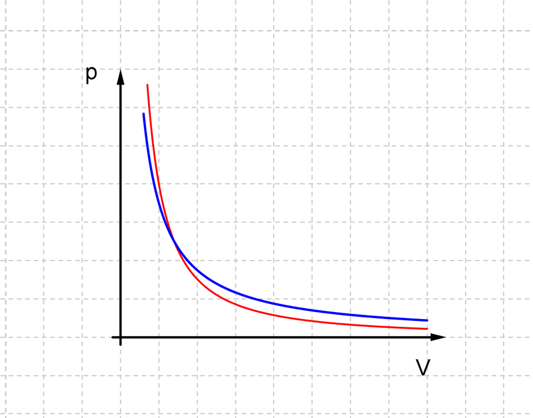
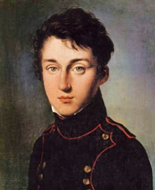
1781–1840
1. termodynamický zákon: $Q=0 \Rightarrow \Delta U = W'$
Plyn je tepelně izolován od okolí. Změna vnitřní energie může být způsobena pouze prací na plynu nebo plynem. Při kompresi teplota roste (okolí koná práci na plynu), při expanzi teplota klesá (plyn koná práci na okolí).
Efekt föhnu — adiabatické stlačování a rozpínání vzduchu s nadmořskou výškou způsobuje typický teplotní rozdíl mezi návětrnou a závětrnou stranou hory.
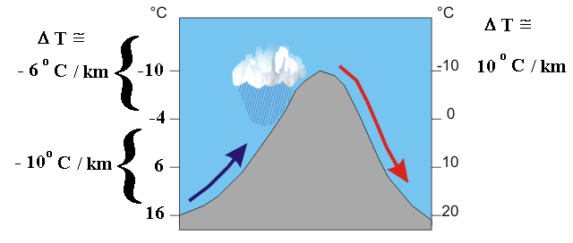
Aplikace: ohřívání pumpičky na kolo při kompresi, ochlazení vzduchu unikajícího z pneumatiky, chlazení v ledničkách a klimatizacích, teplotní změny vzduchových hmot v meteorologii.
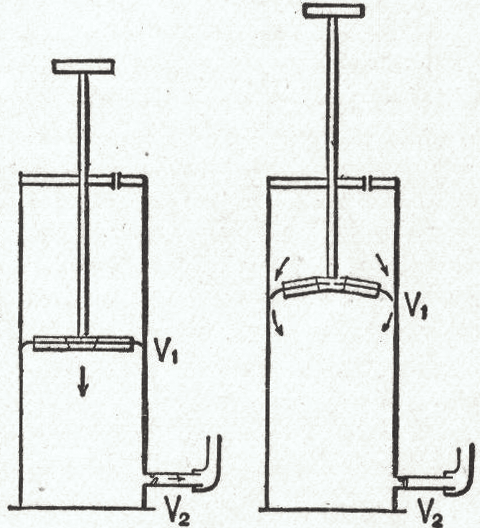
Plyn při nízkém a vysokém tlaku
Střední volná dráha
Střední volná dráha $\lambda$ částice je průměrná vzdálenost, kterou částice urazí mezi dvěma srážkami. Závisí na tlaku plynu (počtu molekul v daném objemu).
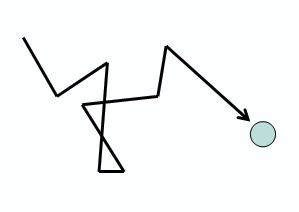
| Stav | Tlak [hPa] | Molekul/cm³ | Střední volná dráha |
|---|---|---|---|
| okolní tlak | 1013 | 2,7·10¹⁹ | 68 nm |
| hrubé vakuum | 300 – 1 | 10¹⁹–10¹⁶ | 0,1–100 μm |
| jemné vakuum | 1 – 10⁻³ | 10¹⁶–10¹³ | 0,1–100 mm |
| vysoké vakuum | 10⁻³ – 10⁻⁷ | 10¹³–10⁹ | 10 cm – 1 km |
| ultra vysoké vakuum | 10⁻⁷ – 10⁻¹² | 10⁹–10⁴ | 1 km – 10⁵ km |
| extrémní vakuum | <10⁻¹² | <10⁴ | >10⁵ km |
Vakuová pumpa
Vakuová pumpa je nástroj umožňující vytvořit vakuum, tj. snížit tlak plynu. Existují různé systémy vakuových pump; výběr závisí mimo jiné na požadované kvalitě vakua.
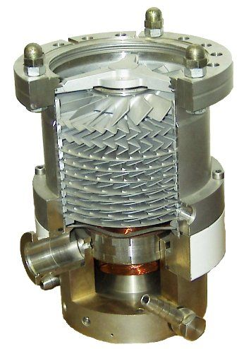
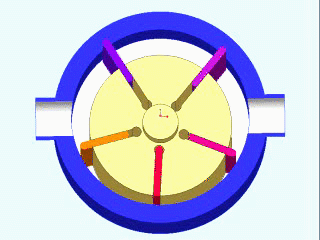
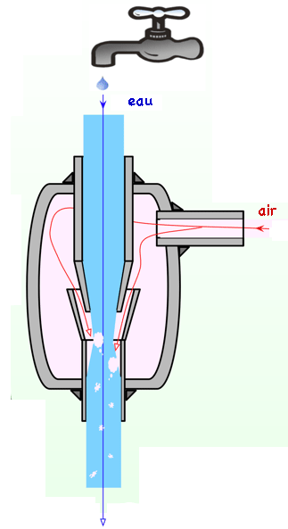
Práce ideálního plynu
Při stálém tlaku
$W' = F\cdot\Delta s = p\cdot S\cdot\Delta s = p\cdot\Delta V$
$W' = p\cdot\Delta V$
$\Delta V > 0 \Rightarrow W'>0$ — práce vykonaná plynem
$\Delta V < 0 \Rightarrow W'<0$ — práce vykonaná na plynu
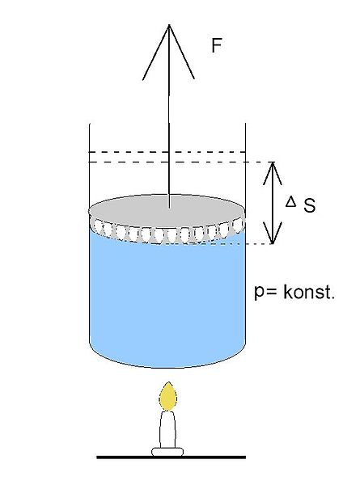
Práce ideálního plynu při přechodu z A do B izobarického děje je v diagramu p-V graficky vyjádřena obsahem obdélníku pod izobarou.
Při proměnném tlaku
Práce plynu se rovná obsahu plochy pod křivkou $p=f(V)$ v diagramu p-V — tedy určitému integrálu tlaku podle objemu mezi počátečním a koncovým stavem.
Kruhový (cyklický) děj ideálního plynu
Kruhový děj je posloupnost přeměn termodynamické, fyzikální nebo chemické soustavy taková, že konečný stav soustavy je totožný s počátečním stavem. V diagramu p-V se vyjadřuje uzavřenou křivkou.
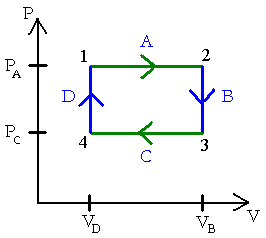
Příklad: A — izobarická expanze, B — izochorický děj, C — izobarická komprese, D — izochorický děj
Práce plynu odpovídající celému cyklu je graficky rovna ploše uvnitř uzavřené křivky:
$W_{1\text{-}2\text{-}1} = W_{1\text{-}2} - |W_{2\text{-}1}|$
Protože konečný stav kruhového děje se rovná stavu počátečnímu, je změna vnitřní energie za celý cyklus nulová: ΔU = 0
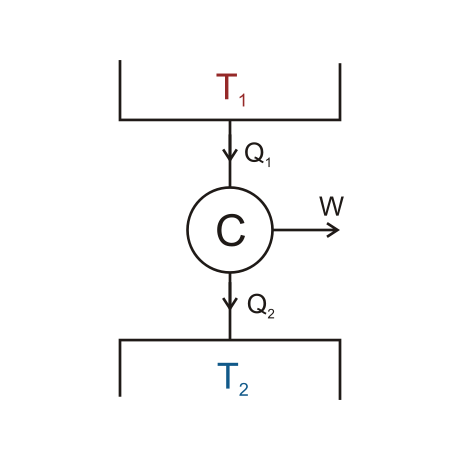
Během cyklu plyn přijme teplo $Q_1$ od teplého zdroje („ohřívače“) a odevzdá teplo $Q_2$ „chladiči“, přičemž $Q_1 > Q_2$. Rozdíl $Q_1-Q_2$ se přemění na práci $W'$ plynu:
$W' = Q_1 - Q_2$
Tepelná účinnost kruhového děje:
$\eta = \dfrac{W'}{Q_1} = \dfrac{Q_1-Q_2}{Q_1} = 1-\dfrac{Q_2}{Q_1}$
Účinnost je vždy menší než 1!
Druhý zákon termodynamiky
Carnotovo tvrzení
Vykonává-li stroj práci během cyklu, vyměňuje si nutně teplo se dvěma zdroji o různých teplotách.
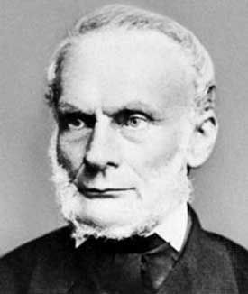
Clausiovo tvrzení
Teplo nemůže samovolně přecházet z chladnějšího tělesa na teplejší.
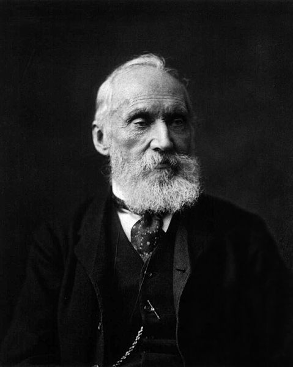
Thomson–Kelvin–Planckovo tvrzení
Nelze sestrojit stroj, který by po dokončení cyklu konal práci pouze na základě tepla čerpaného z jediného zdroje.
To znamená, že každý motor musí být chlazen.
Příklad: Je nemožné sestrojit loď, která by konala práci pouze z tepla čerpaného z oceánu (i kdyby byl teplý). Takový stroj by odpovídal tzv. perpetuum mobile druhého druhu.
Tepelné stroje
Tepelný stroj může plnit dvě hlavní funkce:
- přeměna tepla na práci (uvedení tělesa do pohybu pomocí tepla): parní stroj, spalovací motor (zážehový, dieselový, na alkohol či plyn v automobilech, proudové motory letadel)...
- přeměna práce na teplo (vytvoření tepla nebo chladu z pohybujícího se tělesa): tepelné čerpadlo, lednička, klimatizace...
Tepelné stroje jsou založeny na sadě termodynamických přeměn, kterými prochází tekutina cyklickým způsobem. Tato tekutina je soustavou, která si vyměňuje teplo a práci s okolím.
Parní stroj
Tekutinou je voda, ohřívaná uhelným kotlem, aby se odpařila (přívod tepla). Vodní pára uvádí do pohybu píst, který přes klikový mechanismus otáčí kolem (vznik práce).
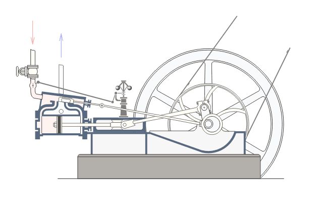
Spalovací motor
V klasickém čtyřdobém zážehovém motoru dochází k výbuchu směsi vzduchu a paliva ve spalovací komoře pomocí jiskry ze zapalovací svíčky (přívod tepla), což uvádí do pohybu píst a otáčí koly (vznik práce).
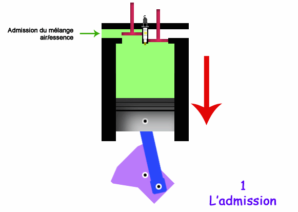
Lednička, klimatizace, tepelné čerpadlo
Základní princip ledničky spočívá ve stlačení tekutiny pomocí kompresoru (přívod práce) a následném prudkém rozepnutí (snížení tlaku tekutiny), což způsobuje chlazení. Klimatizace fungují na stejném principu a tepelná čerpadla jsou v podstatě klimatizace pracující „obráceně“.
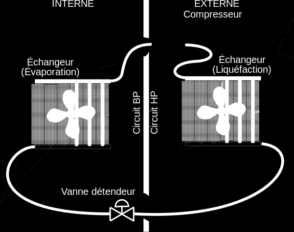
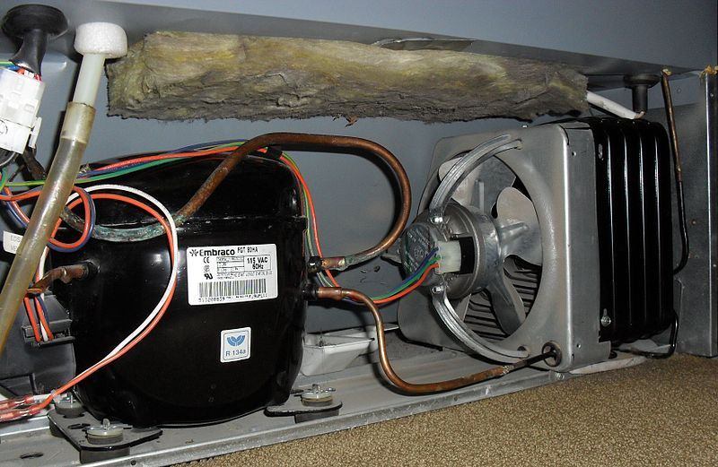
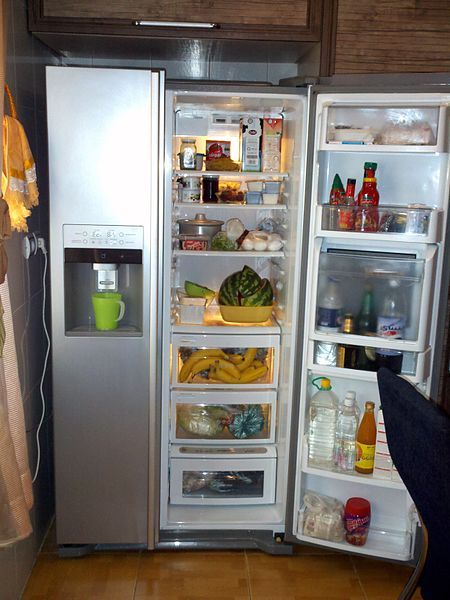